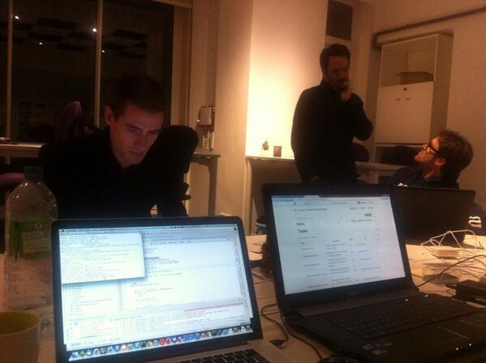
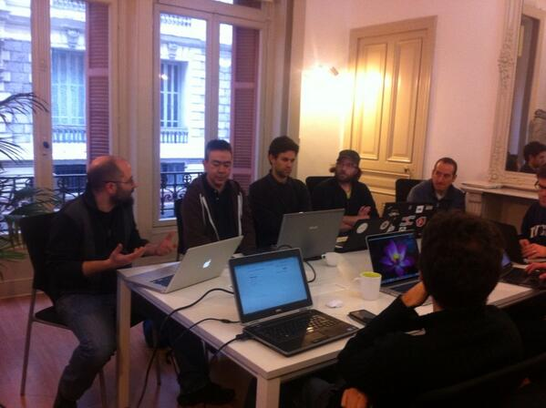
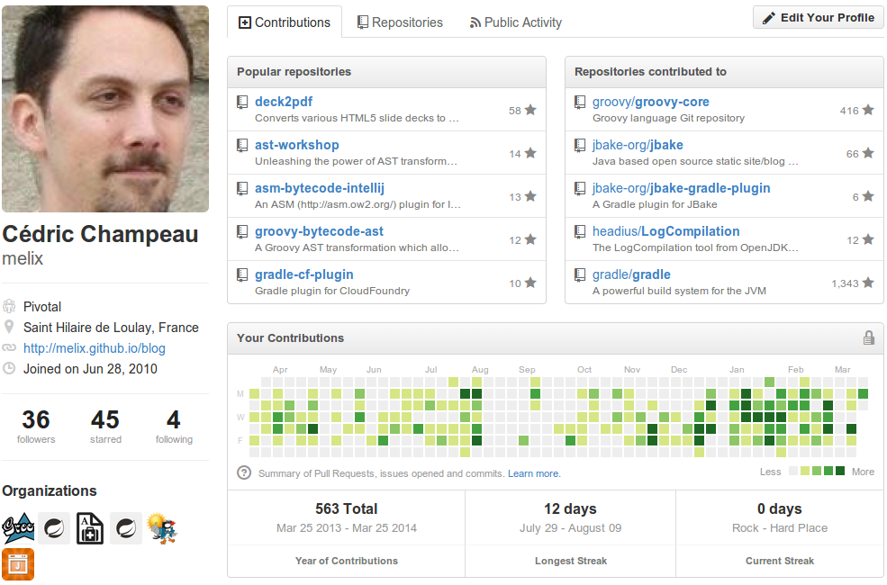
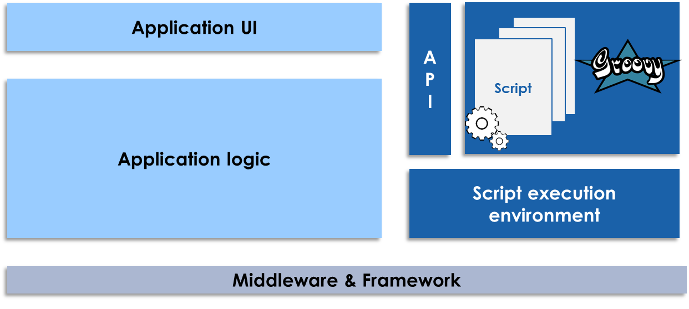
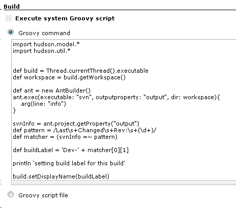

Groovy
head in the Cloud
Cédric Champeau
alias melix
@CedricChampeau
cedric.champeau@gmail.com
https://github.com/melix
http://www.gopivotal.com
- Full-time Groovy developer
- AST transformation hacker
- Responsible for the type checker and static compiler
Fabrice Matrat
alias Porthos

@fabricematrat
fabricematrat@gmail.com
https://github.com/fabricematrat


How to contribute
Step 1 - Use Case
- Identify aproblem or a widely used, but unsupported technology
- No need to be brilliant or require huge work. You only have to solve a problem
Step 2 - Find a mentor

Step 3 - Work hard

Step 4 - Have fun
Step 5 - Pull Request

Use Case
Cloud and Groovy
Where ?
Customization
DSL
Real life

Jenkins

Problems
Script can
- Consume Resources (CPU, disk, Threads)
- Java and your own API is exposed
ThreadInterrupt
@ThreadInterrupt
import groovy.transform.ThreadInterrupt
while (true) {
// eat cpu
}TimedInterrupt
@TimedInterrupt(10)
import groovy.transform.TimedInterrupt
while (true) {
// eat cpu
}ConditionalInterrupt
@ConditionalInterrupt({counter++>1})
import groovy.transform.ConditionalInterrupt
counter=0
def scriptMethod() {
4.times {
println 'executing script method...'
}
}
scriptMethod()API Control
System.exit(-1)Compile Time
SecureASTCustomizer
def configuration = new CompilerConfiguration()
def customizer = new SecureASTCustomizer()
customizer.with {
receiversBlackList = ["java.lang.System"]
}
configuration.addCompilationCustomizers(customizer)
new GroovyShell(configuration).evaluate("System.exit(-1)")But this ?
def configuration = new CompilerConfiguration()
def customizer = new SecureRuntimeASTCustomizer()
customizer.with {
receiversBlackList = ["java.lang.System"]
}
configuration.addCompilationCustomizers(customizer)
new GroovyShell(configuration).evaluate("((Object)System).exit(-1)")But how many ways ?
- System.exit(0)
- Eval.me("System.exit(0)")
- evaluate("System.exit(0)")
- (new GroovyShell()).evaluate("System.exit(0)")
- Class.forName("java.lang.System").exit(0)
- System.&exit.call(0)
- System.getMetaClass().invokeMethod("exit",0)
- def s = System; s.exit(0)
- Script t = this; t.evaluate("System.exit(0)")
- def s = “exit”; System.”$s”(0)
Community
- Koshuke Kawagushi http://groovy-sandbox.kohsuke.org
- Jim Driscoll https://github.com/sjurgemeyer/GR8ConfUS2013/tree/master/JimDriscoll
- Simon Temple https://github.com/simon-temple/groovy-sandbox
- JavaSandBox http://blog.datenwerke.net/2013/06/sandboxing-groovy-with-java-sandbox.html
What's missing ?
- Works with CallSite caching
- Issue with InvokeDynamic
- Issue with Static type checking
Solution !
Wrap calls with a closure
before
((Object)System).exit(-1)After
groovyAccessControl.checkCall(((Object)System),
"exit",
[-1],
{ receiver, methodName, args -> ... something doing the call... })Details
- Whitelist
- Blacklist
public Object checkCall(Object receiver,
String methodName,
Object[] args,
Closure closure) {
checkCallOnReceiver(receiver, methodName, args,
methodsOnReceiverBlacklist,
methodsOnReceiverWhitelist);
return closure.call(receiver, methodName, args);
}HackenGarten with Cedric
Let's switch to IDE
LeftOver
- Issue with implicit this
- Static type checking
- Cleaning
- Test
- Test
- Test
- Test
Key takeaways
- Contributing is easy
- Securing Script is not
- Mix Compile Time + Runtime Check
- Consider Security Manager